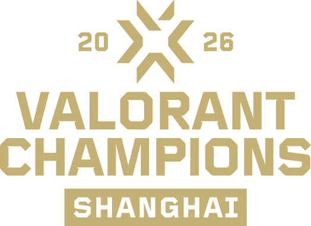

Sobre o torneio
O VALORANT Champions 2026 é o campeonato mundial do VALORANT Champions Tour (VCT) 2026, o circuito oficial de competições do jogo organizado pela Riot Games. Ele foi disputado em Xangai, na China, entre 24 de setembro e 18 de outubro de 2026.
Foi a primeira vez que a China recebeu o Champions, e também a última edição no modelo de franquias: a partir de 2027 o VCT volta a ter seletivas abertas.

Detalhes do campeonato
Confira as principais informações do evento:
- Local: Xangai, China
- Datas: 24 de setembro a 18 de outubro de 2026
- Premiação: US$ 2.250.000 (US$ 1.000.000 para o campeão)
- Equipes: 16 times das ligas Americas, EMEA, Pacific e China
- Arenas: Jing'an Sports Center e Mercedes-Benz Arena
Formato e chaveamento
O torneio foi dividido em etapas que seguem esta ordem:
- Sorteio dos grupos, realizado em 6 de setembro de 2026.
- Fase de grupos: 16 times divididos em 4 grupos de 4, em dupla eliminação.
- Playoffs: os 8 classificados entram em uma chave de dupla eliminação.
- Grande final em melhor de cinco mapas, no dia 18 de outubro.
O campeão
LOUD é bicampeã mundial de VALORANT
A LOUD conquistou o título do VALORANT Champions 2026 no domingo (18), ao derrotar a europeia Team Vitality por 3 mapas a 1 na Grande Final. Com a vitória, a organização brasileira faturou US$ 1 milhão. A LOUD já havia sido campeã do Champions em 2022, em Istambul.
Para ver todos os resultados, acesse o site oficial do VALORANT Esports.